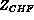

After one has determined the axial location,  , in the channel for the first occurrence of critical heat flux using correlations (Section 7.0), the next step is to determine the heat transfer coefficient in the post-CHF region. This heat transfer coefficient is to be used for the determination of the wall temperature given the wall heat flux or vice versa for a known wall temperature. A considerable number of empirical equations have been presented by various investigators for the estimation of heat transfer rates in the post-dryout region. Almost all of these equations are modifications of the well-known Dittus-Boelter type relationship for single-phase flow and take no account of the non-equilibrium effects discussed above. Rather thermodynamic equilibrium is assumed between the vapor and liquid. Various definitions of the "two-phase velocity" and physical properties are used in these empirically modified forms and a number of correlations result. Each of these correlations is based on only a limited amount of experimental data and Groeneveld, therefore, proposed a new correlation for each geometry optimized using his bank of selected data. This is the recommended correlation if one is to use the simplified equilibrium approach to a post-CHF analysis.
The Groeneveld corrections for tubes and annuli have the form:
and the coefficients a, b, c and d are given in Table 8.1, together with the ranges of independent variables on which the correlations are based.